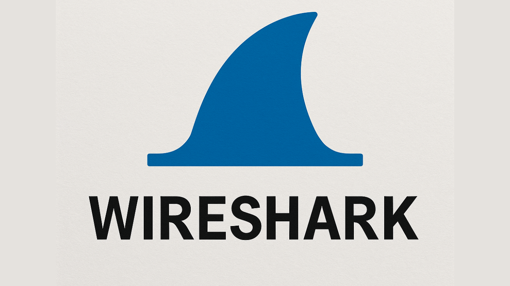

What is Wireshark?

Wireshark is the world's most widely used network protocol analyser. It lets you capture and inspect network traffic in real time, down to the individual packet level. Security professionals use it for traffic analysis, debugging, and understanding network behaviour.
Installing TShark — CLI
TShark is the command-line packet analyser. It runs anywhere Wireshark's engine is supported — including NetHunter and headless Kali — with no desktop required.
$ sudo apt update
$ sudo apt install tshark -ysudo every time.$ sudo apt update
$ sudo apt install tshark -y$ sudo pacman -S wireshark-cliVerify TShark installed correctly and check its version:
$ tshark --version
TShark (Wireshark) 4.2.2 (Git commit xxxxxxxx).
Copyright 1998-2024 Gerald Combs <gerald@wireshark.org> and contributors.
Running on Linux 6.1.0-kali9-amd64To run a basic capture on your default interface, simply type:
$ tshark
Capturing on 'eth0'
1 0.000000000 192.168.1.10 → 8.8.8.8 DNS 74 Standard query A example.com
2 0.012453000 8.8.8.8 → 192.168.1.10 DNS 90 Standard query response …Installing Wireshark — GUI
kex &) or a VNC client before starting Wireshark. On a standard Kali install with a desktop, just run it directly.
$ sudo apt update
$ sudo apt install wireshark -y$ sudo apt update
$ sudo apt install wireshark -y$ sudo pacman -S wireshark-qtOnce installed, launch the GUI from your desktop session or from a terminal inside KEX / VNC:
$ wiresharkSetting Up Capture Permissions
By default, capturing packets requires root. To allow your normal user to capture without sudo on every launch, add yourself to the wireshark group.
$ sudo usermod -aG wireshark $USER
$ newgrp wiresharknewgrp wireshark applies the group change to your current shell only. For it to apply system-wide, log out and log back in (or reboot). On NetHunter, restart your KEX/VNC session.Alternatively, re-run the Debian configuration to toggle non-root capture via the interactive menu:
$ sudo dpkg-reconfigure wireshark-commonRunning Your First Capture
With both tools installed, try capturing some live traffic. Always capture only on networks you own or have explicit permission to monitor.
List your available network interfaces first, then start a capture on a specific one:
$ tshark -D
1. eth0
2. wlan0
3. lo (Loopback)
4. any$ tshark -i wlan0 -c 50
Capturing on 'wlan0'
1 0.000000 192.168.1.1 → 192.168.1.55 TCP 74 443→52341 [SYN, ACK]
2 0.000122 192.168.1.55 → 192.168.1.1 TCP 66 52341→443 [ACK]
…
Packets captured: 50- Launch Wireshark from your desktop or
wiresharkin the KEX terminal - Select your interface from the welcome screen (e.g. wlan0 or eth0)
- Click the blue shark-fin Start button — packets begin scrolling immediately
- Press the red Stop square when you have enough data
- Use the filter bar at the top to narrow results (e.g. http, dns, tcp.port == 443)
| Flag | What it does |
|---|---|
-i eth0 | Capture on a specific interface |
-D | List all available interfaces |
-c 100 | Stop after capturing 100 packets |
-w out.pcap | Write capture to a file |
-r file.pcap | Read and analyse a saved capture |
-Y "dns" | Apply a display filter (same syntax as Wireshark) |
-T fields | Output specific fields only (great for scripting) |
Troubleshooting
Common issues and how to fix them on Kali and NetHunter.
tshark: command not found
sudo apt install tshark -y. On NetHunter, make sure you're in the Kali chroot session, not the Android base shell.wireshark group yet. Run sudo usermod -aG wireshark $USER then log out and back in. Or prefix with sudo tshark as a quick workaround.kex & or connect your VNC client, then launch wireshark from within that session. Running it from a raw Android terminal without a display will fail.tshark -D
sudo tshark -D to confirm they exist, then fix permissions with the wireshark group method in section 4.